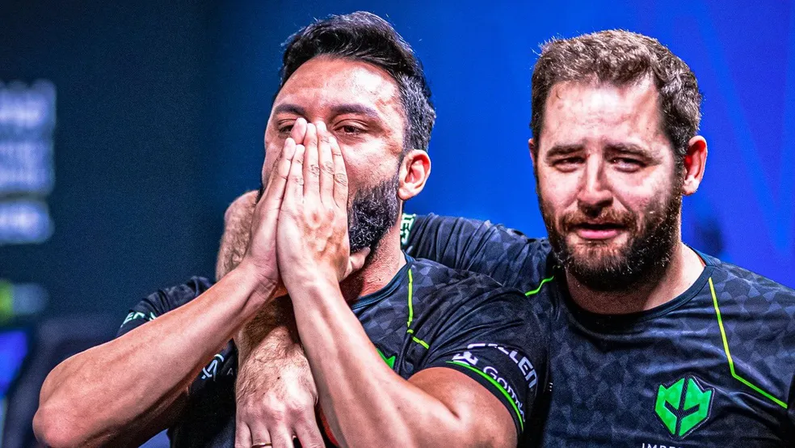
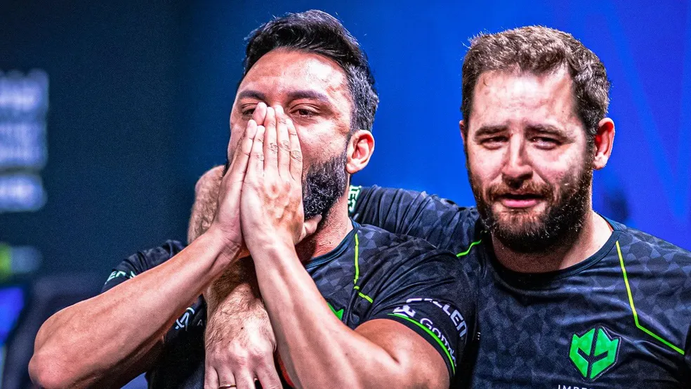

- Contexto
Gabriel Toledo de Alcântara Sguario, também conhecido como FalleN, seu nick em CS:GO, é um jogador profissional e já foi considerado uma das pessoas mais influentes no cenário de esports no Brasil. Sua carreira como streamer não fica pra trás, pois o pro player possui milhões de seguidores em suas redes sociais.
Descubra tudo sobre a história de FalleN que já foi considerado o melhor jogador de Counter-Strike: Global Offensive do Brasil.

- O inicio da jornada
Desde criança Gabriel teve contato com computadores e especialmente games, pois seus pais possuíam uma loja de informática e o garoto passava um bom tempo por lá. Foi em 2003, com apenas 12 anos que o rapaz teve sua primeira experiência com Counter-Strike e desde então nunca mais deixou o jogo.
CS acabou se tornando parte de sua rotina diária. Não é difícil imaginar que um garoto tão jovem se apaixone por um game. Gabriel começou a jogar todos os dias sempre que tinha um tempo livre, mas ele também ajudava seus pais na loja de informática formatando computadores e, claro, tinha que cumprir com suas obrigações.
Mesmo sendo muito jovem, se uniu a equipes dentro do jogo. Sua primeira foi a Soldiers Of Fire, na qual ele começou a competir. Com apenas 14 anos entrou para a Crashers, na WCG Brasil 2005 e a partir desse ponto o jogador começou a jogar mais sério, participava de campeonatos presenciais e até mesmo viajava se necessário. Antes disso, Gabriel já havia ganhado alguns campeonatos, mas foi em 2009 que sua carreira começou a decolar.
Gabriel Toledo de Alcântara Sguario, também conhecido como FalleN, seu nick em CS:GO, é um jogador profissional e já foi considerado uma das pessoas mais influentes no cenário de esports no Brasil. Sua carreira como streamer não fica pra trás, pois o pro player possui milhões de seguidores em suas redes sociais. Descubra tudo sobre a história de FalleN que já foi considerado o melhor jogador de Counter-Strike: Global Offensive do Brasil.
Desde criança Gabriel teve contato com computadores e especialmente games, pois seus pais possuíam uma loja de informática e o garoto passava um bom tempo por lá. Foi em 2003, com apenas 12 anos que o rapaz teve sua primeira experiência com Counter-Strike e desde então nunca mais deixou o jogo.
CS acabou se tornando parte de sua rotina diária. Não é difícil imaginar que um garoto tão jovem se apaixone por um game. Gabriel começou a jogar todos os dias sempre que tinha um tempo livre, mas ele também ajudava seus pais na loja de informática formatando computadores e, claro, tinha que cumprir com suas obrigações.
Mesmo sendo muito jovem, se uniu a equipes dentro do jogo. Sua primeira foi a Soldiers Of Fire, na qual ele começou a competir. Com apenas 14 anos entrou para a Crashers, na WCG Brasil 2005 e a partir desse ponto o jogador começou a jogar mais sério, participava de campeonatos presenciais e até mesmo viajava se necessário. Antes disso, Gabriel já havia ganhado alguns campeonatos, mas foi em 2009 que sua carreira começou a decolar.